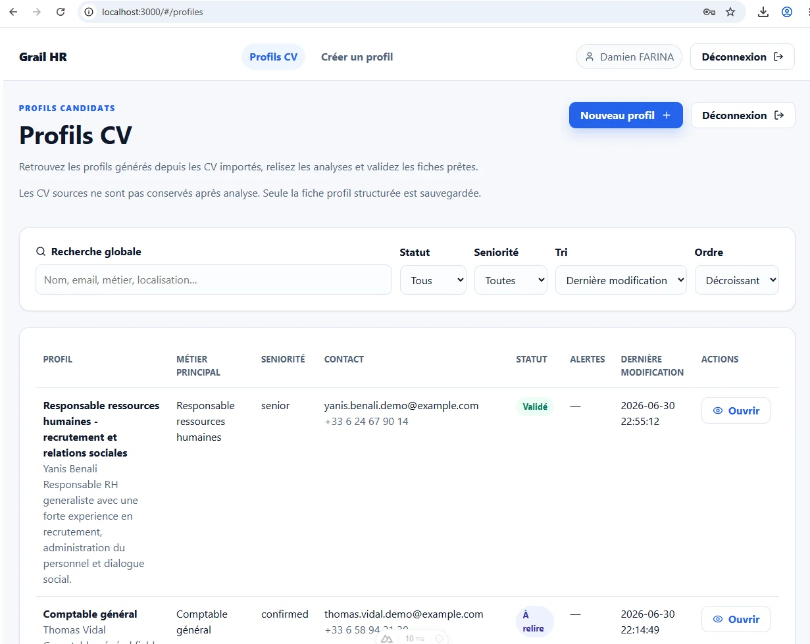

Grail HR turns PDF resumes into structured candidate profiles.
This prototype demonstrates an AI-assisted HR workflow: temporary resume import, structured analysis, human review, validation, administration and exports. It relies on a WordPress backend plugin and an independent Nuxt frontend.
Structured AI analysis
The PDF resume is analyzed to produce a readable, editable and usable candidate profile.
Human validation
The interface focuses on review, correction and validation by an authorized user.
Controlled backend
WordPress provides the API, administration, logs, exports and access management.

A functional prototype, not a final product
Grail HR is a public product and architecture demo. The data is fictional and the prototype is not intended for production use without security review, a full data-protection strategy, testing and business validation.
No public candidate portal, no OCR, no job matching, no candidate scoring and no automated decision-making. Human validation remains central.